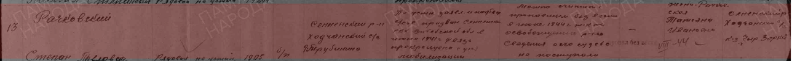
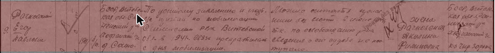
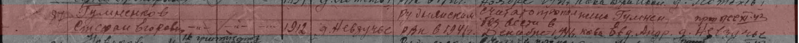
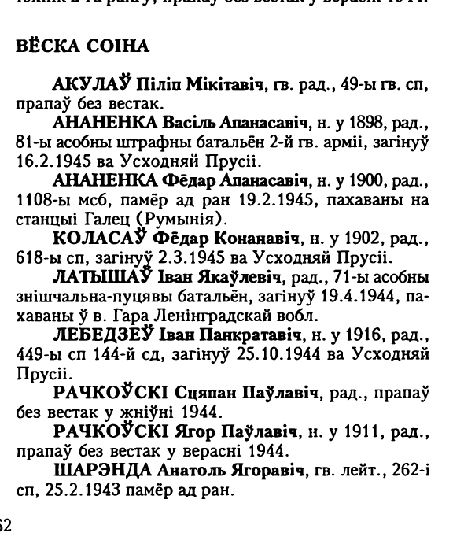
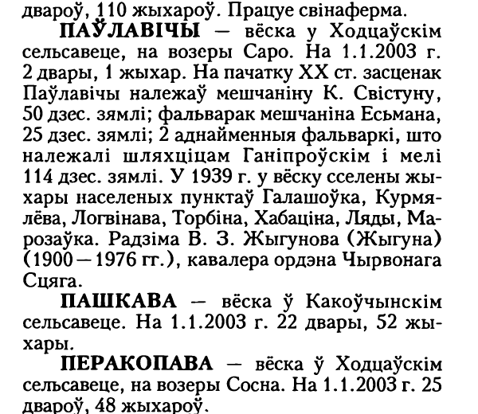
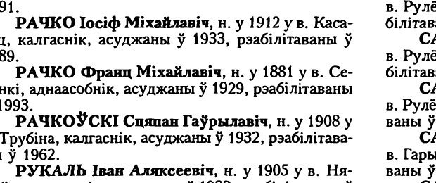

Главное
- Дед по матери — почти наверняка Стефан Егорович Гумненков, 1912 года рождения, из деревни Невзучье (ныне Руднянский район Смоленской области). В 1941 году его призвали в армию; в 1947 году военкомат записал: «считать пропавшим без вести в декабре 1941 г.». Жена — Евдокия Андреевна. Других Стефанов или Степанов Гумненковых из Невзучья в базах нет. по документу что это дед — вероятно
- Дед по отцу — скорее всего Степан Павлович Рачковский, 1905 года рождения, из деревни Трубинино рядом с Павловичами Сенненского района. Призван в июне 1941 года, пропал без вести в 1944-м. Его жена Татьяна Ивановна жила в колхозе «Чырвоная зорька», а этот колхоз был именно в Павловичах. Есть и второй кандидат — Степан Гаврилович Рачковский, 1908 года рождения, из той же деревни, репрессированный в 1930-х. версия
- Обе семьи — крестьяне северо-восточной Беларуси и Смоленщины. Павловичи, Трубинино и Соино в 1910 году относились к Латыговской волости Сенненского уезда Могилёвской губернии и к Покровской церкви в Ходцах. Невзучье — к Любавичской волости Оршанского уезда и к Любавичскому приходу. по справочнику
- Глубже — только через архивы. Метрические книги и ревизские сказки этих мест не оцифрованы: их нет ни на FamilySearch, ни на сайтах архивов. Номера нужных дел найдены — они в разделе «Что дальше». не установлено
Николай Степанович и Вера Стефановна
О самих родителях пока известно только то, что рассказала семья: отец — Николай Степанович Рачковский, мать — Вера Стефановна; дед по отцу — Степан Рачковский из «деревни Павловичи, Сенницкий район», дед по матери — Стефан Гумненков из «деревни Невзучье». [14] по сведениям семьи
В базах о Великой Отечественной войне Николая Степановича Рачковского нет. Скорее всего, он родился после 1927 года и в армию в войну не призывался. В книге памяти Сенненского района среди участников войны от Ходцевского сельсовета его тоже нет. не установлено
«Сенницкий район» в семейной записи — по всей видимости, Сенненский: Павловичи есть только там, рядом с деревнями, где жили Рачковские. «Гумненкоф» — та же фамилия Гумненков, так она записывается в документах.
Рачковские из Павловичей
Павловичи, Трубинино и Соино
Деревня Павловичи стоит на озере Саро в Ходцевском сельсовете Сенненского района Витебской области. По «Списку населённых мест Могилёвской губернии» 1910 года, это была деревня Латыговского сельского общества в 11 дворов и 61 жителя; рядом — Трубинино (5 дворов, 30 жителей) и Соино (26 дворов, 160 жителей). Все три деревни относились к православному приходу Покровской церкви в Ходцах. [6] по справочнику
Павловичи известны с 1758 года как центр имения. К середине XIX века крестьяне Павловичей, Соина и Перекопова принадлежали помещику Антону Бржостовскому: в 1866–1869 годах губернское присутствие рассматривало дело о выкупе ими земли у Бржостовского. [7] В начале XX века землёй в Павловичах владели мещане Свистун и Есьман и шляхтичи Ганипровские. [4]
В 1924 году Павловичи ненадолго стали центром сельсовета (с октября того же года центр перенесли в Ходцы). В 1939 году в Павловичи сселили жителей окрестных хуторов и деревень: Галашовки, Курмелево, Логвиново, Торбино, Хабатино, Ляды, Морозовка. [4] Деревня Торбино, по всей видимости, та же, что Трубинино 1910 года. вероятно После войны здесь был колхоз «Чырвоная зорька». [7] К 2003 году в Павловичах оставалось два двора и один житель. [4]с. 601

Степан Павлович Рачковский (1905 — пропал без вести в 1944)
В документе Сенненского военкомата, уточняющем потери, записано: «Рачковский Степан Павлович, рядовой, 1905, Сенненский р-н, Ходчанский с/с, д. Трубинина. По установлению заведующего сельсоветом и подтверждению соседей призван Сенненским РВК Витебской обл. в июне 1941 г. Связь прекращена с дня мобилизации». Военкомат счёл его пропавшим без вести (в графе выбытия — август 1944 года). В графе о семье: «жена — Рачковская Татьяна Ивановна», адрес — «Сенненский р-н, Ходчанский с/с, к-з „Чыр[воная] Зорка“». [1]вырезкалист по документу


В книге памяти Сенненского района он значится по деревне Соино: «Рачкоўскі Сцяпан Паўлавіч, рад., прапаў без вестак у жніўні 1944». [4]с. 462

Его вероятный брат — Егор Павлович Рачковский, 1911 года рождения, из деревни Соино: призван в 1941 году, пропал без вести в 1944-м; жена — Акулина Филипповна, тот же колхоз «Чыр[воная] Зорка». [2]вырезкалист В книге памяти он записан и по Павловичам, и по Соину. [4]с. 461 брат — по отчеству


Почему он, скорее всего, и есть дед Степан. Семья называет деревню Павловичи; жители Трубинина-Торбина в 1939 году были сселены в Павловичи; колхоз «Чырвоная зорька», где жила его жена, находился в Павловичах. Возраст подходит: сын Николай мог родиться в 1925–1941 годах. Но документа, где Николай Степанович был бы назван его сыном, пока нет. версия
Второй кандидат: Степан Гаврилович Рачковский (1908)
В той же деревне жил ещё один Степан Рачковский. Книга памяти Сенненского района пишет: «Рачкоўскі Сцяпан Гаўрылавіч, н. у 1908 у в. Трубіна, калгаснік, асуджаны ў 1932, рэабілітаваны ў 1962». [4]с. 119 По «Открытому списку» (данные Управления КГБ по Витебской области), Степан Гаврилович 1908 года рождения из деревни Трубилино Сенненского района работал столяром на витебской фабрике имени Кагановича, был арестован 9 февраля 1938 года и расстрелян 15 марта 1938 года; реабилитирован в 1989 году. [5] Сведения двух источников расходятся (1932 или 1938 год): возможно, это два разных дела. В военных базах Степана Гавриловича нет. возможная родня

Другие Рачковские этих мест
- Рачковский Максим Феодосович, 1898, хутор Курмелево Павловичского сельсовета — единоличник, арестован в декабре 1932 года, три года лагерей; реабилитирован в 1989 году. Курмелево в 1939 году сселили в Павловичи. [16]
- Рачковская Ксения Афанасьевна, 1908, Малые Павловичи — осуждена в 1930 году тройкой ОГПУ; сведения о ней пришли из УВД Читинской области — по-видимому, семью выслали в Забайкалье. [16]
- Рачковский Пётр Филиппович, 1920, деревня Морозовка — партизан отряда имени Щорса; Рачковский Николай Герасимович, 1923, Латыголь — партизан Сенненской бригады; его брат, вероятно, Михаил Герасимович, 1919, пропал без вести в 1941 году. [15] [4]
- В 1939 году в деревню Латыголь Ульяновичского сельсовета сселили и хутор под названием «Рачковского». [4]с. 596 На сайте radzima.net есть воспоминание: «переселены рачковские с хутора богатого в 30-х».
- В годы Первой мировой войны в армии служили Рачковские из Латыговской и Ульяновичской волостей Сенненского уезда — Даниловичи, Федосеевичи и другие; Павла и Степана среди них нет. [11]

Как все эти семьи связаны между собой, пока неизвестно. не установлено
Гумненковы из Невзучья
Невзучье
Невзучье стоит в пяти с половиной километрах от Любавичей и в восьми — от Рудни. В 1910 году это была деревня Любавичской волости Оршанского уезда Могилёвской губернии, Хоминского сельского общества, в 26 дворов и 173 жителя, Любавичского православного прихода. [6] по справочнику Рядом лежали Подсосны (24 двора) и Заложье (12 дворов). В 1919 году Любавичскую волость передали в Смоленский уезд, с 1929 года деревня — в Руднянском районе Смоленской области, в Заложском, позже Шубковском сельсовете. [13]
Невзучье было оккупировано с 20 июля 1941 года по 29 сентября 1943 года. В книге памяти мирных жителей района названы расстрелянные жители деревни, в том числе студент Ф. П. Дадыкин (1924) и колхозница А. И. Кляузова (1898). Гумненковых среди мирных жертв нет. [9]
Стефан Егорович Гумненков (1912 — пропал без вести в 1941)
В именном списке безвозвратных потерь, который Руднянский военкомат составил в 1947 году, под № 87 записано: «Гумненков Стефан Егорович… 1912, д. Невзучье… Руднянским РВК в 1941 г.… считать пропавшим без вести в декабре 1941 г.»; в графе о родственниках — «жена Гумненкова Евд[окия] Андр[еевна], д. Невзучье». Он есть и в Книге памяти Смоленской области. [3]вырезкалист по документу


Имя, фамилия, отчество дочери и деревня совпадают с тем, что рассказала семья, а других Стефанов или Степанов Гумненковых из Невзучья в базах нет. Поэтому это, почти наверняка, дед Веры Стефановны по матери — то есть её отец, а Евдокия Андреевна — её мать. Прямого документа о Вере пока нет. вероятно
Род Гумненковых
Гумненковы жили гнездом в соседних деревнях Невзучье, Подсосны (Подсосное) и Чушаи. По военным документам видны ветви Егоровичей, Леоновичей, Ефимовичей, Моисеевичей, Никитовичей и Спиридоновичей. [8]
- Из самого Невзучья: Сергей Моисеевич (1903) — убит 14 марта 1943 года у деревни Крестьянская Гора на Жиздре; Афанасий Леонович (1897) — пропал без вести.
- Возможные братья Стефана Егоровича: Иван Егорович Гумненко (8 июня 1921, Заложский сельсовет) — лейтенант; Михаил Егорович Гуменков (1914, Заложский сельсовет, село Под[сосное?]) — младший сержант. по отчеству
- Из Подсосны и Чушаев: Александр Леонович (1921) — гвардии старший сержант, воевал до мая 1945 года; Фёдор Ефимович (1912) — капитан, умер от ран в Германии в марте 1945 года; Степан Григорьевич (1912) — погиб в немецком плену; Григорий Ефимович (1901), Ефим Иванович (1917), Андрей Никитович (1926), Алексей Спиридонович (1927) и другие.
Ветка в Сибири. В 1899 году крестьяне Невзучья (Лебедевы, Багузы и другие) просили разрешения переселиться в Томскую губернию. [12] Гумненковы из соседней Подсосны тоже ушли за Урал: в 1915 году раненым записан Трифон Ефремович Гумненко из «Енисейской губ., Канского округа, Анцирской вол., д. Александровка» [11], а уроженец «д. Подсосная Оршанский уезд» Степан Гаврилович Гумненко (1879), пчеловод колхоза в деревне Северо-Александровка Канского района, был расстрелян в Канске 10 августа 1938 года. [10] Родство этой ветви со Стефаном Егоровичем не установлено.
Документы в изображениях
Под каждой вырезкой — ссылка на полный лист. Красное выделение строки — от сайта «Память народа».
Документы военкоматов об учёте потерь, 1944–1947



Книга «Памяць. Сенненскі раён», 2003



Хронология
| Дата | Событие | Основание |
|---|---|---|
| 1758 | Павловичи впервые упоминаются как центр имения (Витебское воеводство Великого княжества Литовского) | [13] |
| 1866–1869 | Крестьяне Павловичей, Соина и Перекопова выкупают землю у помещика Антона Бржостовского | [7] |
| 1899 | Крестьяне Невзучья просят о переселении в Томскую губернию | [12] |
| 1905 | Родился Степан Павлович Рачковский (деревня Трубинино) | документ 1944–46 |
| 1910 | Павловичи — 11 дворов, Трубинино — 5, Соино — 26 (Ходчанский приход); Невзучье — 26 дворов (Любавичский приход) | [6] |
| 1912 | Родился Стефан Егорович Гумненков (деревня Невзучье) | список 1947 |
| 1919 | Любавичская волость с Невзучьем передана в Смоленский уезд | [13] |
| 1924 | Образован Павловичский сельсовет; в октябре центр перенесён в Ходцы | [13] |
| 1930–1933 | Раскулачивание: осуждены Ксения Афанасьевна (1930) и Максим Феодосович (1933) Рачковские; Степан Гаврилович — по книге памяти осуждён в 1932 году | [16], [4] |
| 15.03.1938 | По «Открытому списку» расстрелян Степан Гаврилович Рачковский | [5] |
| 1939 | Окрестные хутора, в том числе Торбино и Курмелево, сселены в Павловичи | [4] |
| VI.1941 | Степан и Егор Павловичи Рачковские призваны Сенненским военкоматом; Стефан Гумненков — Руднянским | [1], [2], [3] |
| XII.1941 | Последнее время, когда о Стефане Гумненкове что-то знали: «считать пропавшим без вести в декабре 1941 г.» | список 1947 |
| 20.07.1941 – 29.09.1943 | Оккупация Руднянского района | [9] |
| 1944 | После освобождения района Степан и Егор Рачковские признаны пропавшими без вести; их жёны живут в колхозе «Чырвоная зорька» | [1], [2] |
| 1947 | Руднянский военкомат вносит Стефана Гумненкова в список потерь; жена Евдокия Андреевна — в Невзучье | [3] |
Что дальше
Вопросы к семье — любые ответы помогут выбрать между версиями:
- Что рассказывали о деде Степане: погиб или пропал на войне — или был арестован?
- Как звали мать Николая Степановича (не Татьяна Ивановна?) и мать Веры Стефановны (не Евдокия Андреевна?)
- Примерные годы и места рождения Николая и Веры, где они познакомились.
Архивы — здесь лежат документы, которые решат главные вопросы:
- Зональный государственный архив в г. Орше, фонд 902 «Ходцевский сельский Совет» (с 1946 года): похозяйственные книги — состав двора Татьяны Ивановны Рачковской с детьми и годами рождения. Там же фонд 940 — колхоз «Чырвоная зорька» (1948–1950).
- Национальный исторический архив Беларуси (Минск): метрическая книга Ходчанской Покровской церкви о родившихся за 1858–1865 годы (ф. 2301, оп. 2, д. 253) и сводные тома метрик Сенненского уезда 1860–1899 годов (ф. 2301, оп. 2, дд. 188–224); ревизия 1858 года Сенненского уезда (ф. 2151, оп. 1, дд. 172а–172т); дело о выкупе земли у Бржостовского (ф. 2014, оп. 1, д. 523); для Невзучья — сводные тома метрик Оршанского уезда 1871–1885 годов (ф. 2301, оп. 2, дд. 31–35, 145–148) и ревизия 1857–1858 годов (ф. 2151, оп. 1, дд. 146, 148, 149, 158).
- Смоленская область: похозяйственные книги Заложского (Шубковского) сельсовета Руднянского района; метрические книги Любавичских церквей после 1919 года (Государственный архив Смоленской области, ф. 48).
- Управление КГБ по Витебской области — дело Степана Гавриловича Рачковского; его выдают родственникам.
- Отделы ЗАГС — записи о рождении Николая и Веры, об их браке.
Проверено, но не нашлось
- FamilySearch: метрических книг Могилёвской и Смоленской православных консисторий в каталоге нет.
- Николай Степанович и Вера Стефановна — в военных, партизанских и мемориальных базах не найдены.
- Гумненковых нет ни среди мирных жертв оккупации Руднянского района, ни в базах репрессированных (кроме сибирской ветви).
Источники
- Документ, уточняющий потери: Рачковский Степан Павлович, Сенненский РВК. ЦАМО; «Память народа», запись.
- Документ, уточняющий потери: Рачковский Егор Павлович, Сенненский РВК. ЦАМО; «Память народа», запись.
- Именной список безвозвратных потерь Руднянского РВК Смоленской области (1947), № 87: Гумненков Стефан Егорович. ЦАМО; «Память народа», карточка; Книга памяти Смоленской области.
- Памяць: Гіст.-дакум. хроніка Сенненскага раёна. Мінск, 2003: с. 119 («Вернутыя імёны»), 320–323 (участники войны), 461–462 (Павловичи, Соино), 596 (Латыголь), 601 (Павловичи).
- «Открытый список»: Рачковский Степан Гаврилович (1908); основание — УКГБ по Витебской области.
- Список населённых мест Могилёвской губернии (1910): Латыговская волость Сенненского уезда и Любавичская волость Оршанского уезда. Транскрипция на форуме ВГД, тема.
- Описи архивов на fond-vopis-sprava.com: карточка деревни Павловичи — ЗГА в г. Орше, ф. 902, 940; НИАБ, ф. 2014, оп. 1, д. 523 (выкуп земли у Бржостовского, 1866–1869); НИАБ, ф. 2001, оп. 1, д. 403 (Ходчанская Покровская церковь, 1847).
- «Память народа»: все записи по фамилии Гумненков (Руднянский район).
- Книга памяти мирных жителей Смоленской области, Руднянский район. Администрация Смоленской области.
- «Открытый список»: Гумненко Степан Гаврилович (1879); Архив УФСБ по Красноярскому краю, дело П-10663.
- Картотека Первой мировой войны (РГВИА), портал «Память героев Великой войны»: Рачковские Сенненского уезда; Гумненко Трифон Ефремович и Гумненков Пётр Ефремович (Енисейская губерния).
- НИАБ, ф. 2014, оп. 1, д. 2155: дело по ходатайству крестьян деревни Невзучье Лебедева М., Багузы И. и других о переселении в Томскую губернию (1899).
- Справочные статьи: «Паўлавічы (Сенненскі раён)», «Ходцаўскі сельсавет» (белорусская Википедия); «Невзучье» (русская Википедия); radzima.net.
- «Партизаны Беларуси»: Рачковский Николай Герасимович; Рачковский Пётр Филиппович.
- «Открытый список»: Рачковский Максим Феодосович (1898); Рачковская Ксения Афанасьевна (1908).
- Сведения семьи: имена родителей и дедов, деревни Павловичи и Невзучье.